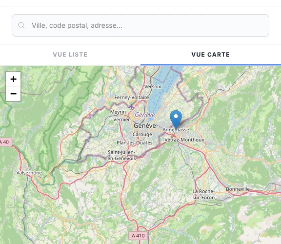
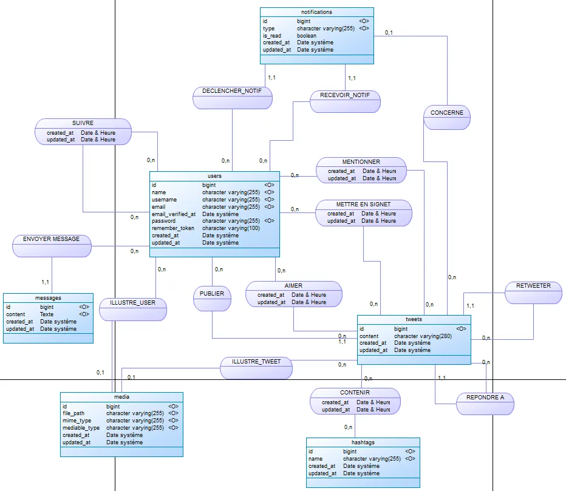
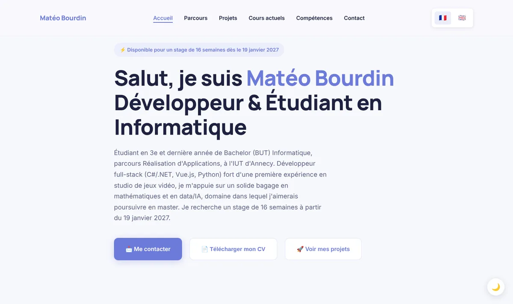
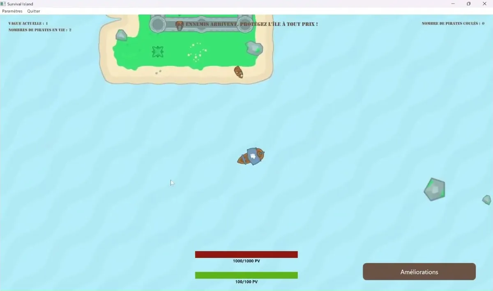
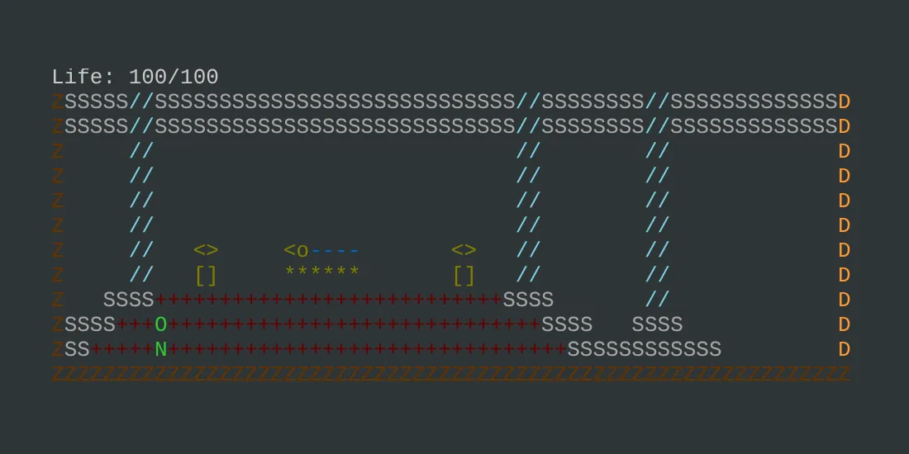
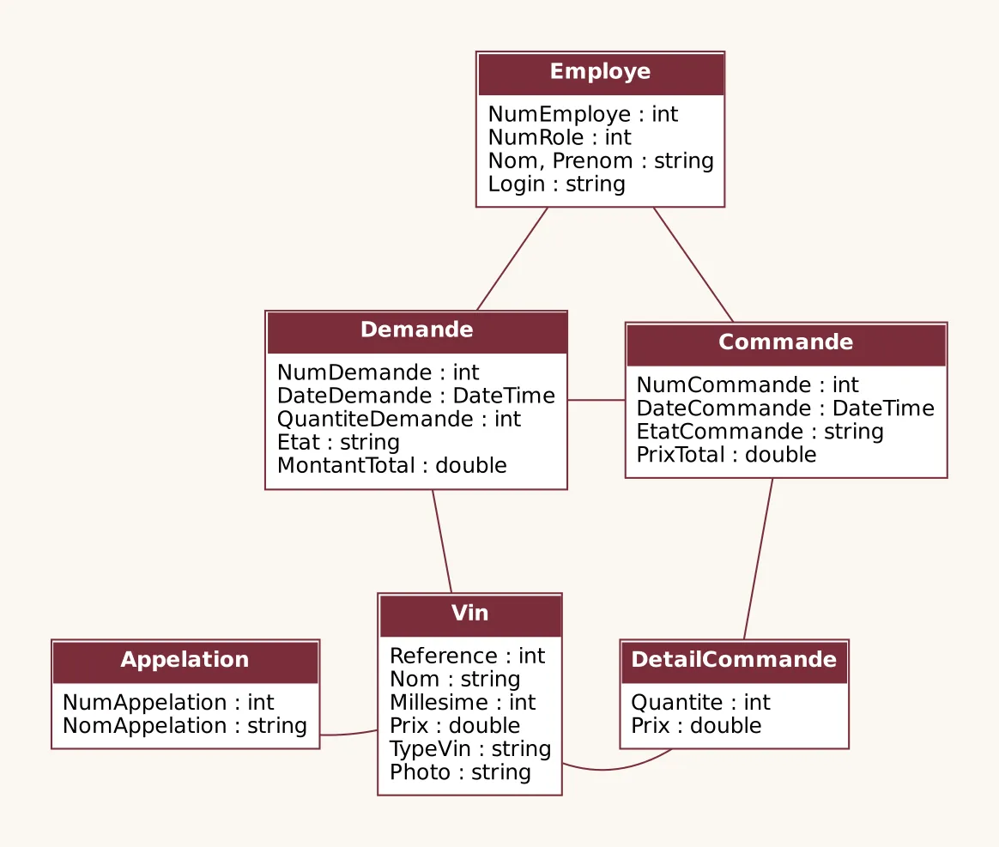

Une sélection de mes projets académiques et personnels utilisant diverses technologies

Plateforme e-commerce full-stack pour une boutique de vélos : backend ASP.NET Core 8 / Entity Framework Core / PostgreSQL avec authentification JWT + Google OAuth, 2FA par TOTP, paiement Stripe Checkout et pattern Repository/Service ; frontend Vue 3 / Pinia / Tailwind CSS avec recherche à facettes, sélecteur de magasin sur carte Leaflet et disponibilité produit par taille et par magasin. Projet récurrent ayant évolué de la SAE 3.01 (Laravel/PostgreSQL) à la SAE 4.01 (ASP.NET Core/Vue 3). Mon rôle : le sélecteur de magasin et la disponibilité par magasin, côté API et côté interface.
Projet académique fictif : ce n'est pas le site officiel de la marque CUBE et il n'y a aucun lien avec elle.

Clone de réseau social développé en équipe de 4 avec Laravel 13 / PHP 8.3, PostgreSQL, Redis et Livewire/Alpine.js, incluant des fonctionnalités temps réel via WebSockets (Laravel Reverb) et un assistant IA façon Grok basé sur l'API Gemini, déployé avec Docker. Mon rôle : l'envoi de médias (jusqu'à 4 photos ou vidéos par tweet, aperçu, validation et stockage).

Site portfolio responsive et bilingue (FR/EN), lancé en décembre 2024 et toujours en évolution : HTML5, CSS3 et JavaScript vanilla, animations, système de traduction i18n, formulaire de contact via Formspree, vérifications automatiques à chaque modification (GitHub Actions) et déploiement sur GitHub Pages.

Jeu de combat naval développé à trois en C# / WPF : aux commandes d'un navire, le joueur défend son île contre des vagues de bateaux ennemis, gagne de l'expérience et améliore son île et son armement. Mon rôle : ennemis, modes de tir, classes de navires, objets récompense, son et musique.

Recréation complète du jeu classique Zelda 2 en Python avec graphismes ASCII colorés et séquences ANSI. Développement d'un système RPG complet incluant combats side-scrolling, exploration de monde ouvert, rencontres aléatoires, NPCs interactifs et gestion d'inventaire. Utilisation de termios pour la gestion des inputs non-bloquants et création d'une IA simple pour les ennemis.

Application desktop de gestion de stock pour l'enseigne Nicolas, développée en binôme en C# / WPF : recherche de vins, demandes d'approvisionnement validées par le responsable, commandes fournisseurs et fiches clients, sur une base PostgreSQL.
Certains projets tournent directement dans le navigateur, sans rien installer
Jeu terminal Python, émulé via Pyodide (Python/WebAssembly)